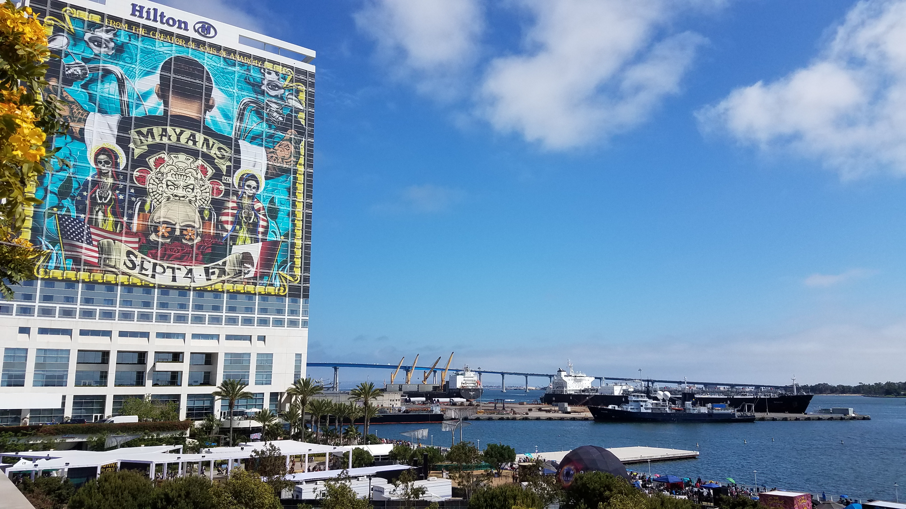
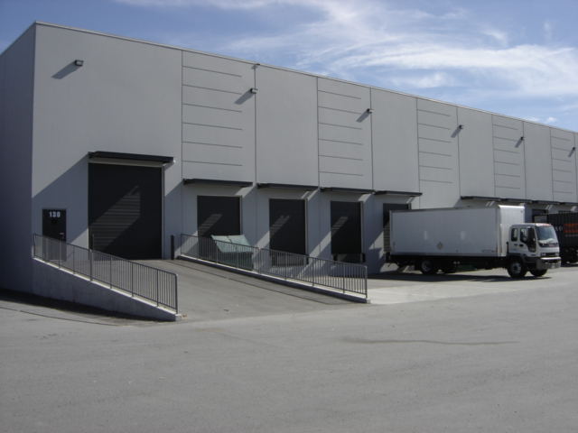
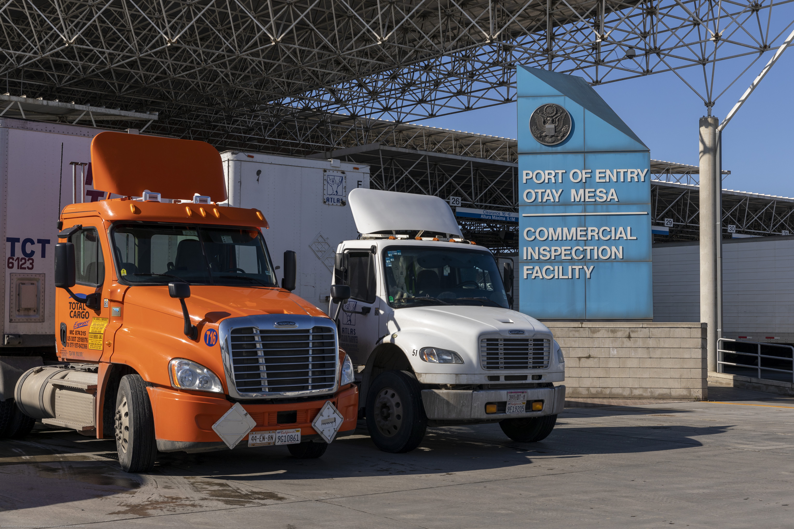

Terminal handoff, appointment discipline, equipment readiness, and short-haul release from San Diego Bay.
Harbor Intake / LANE SD-01
Freight coordinated from port to border to final mile.
Armo coordinates San Diego harbor, warehouse, border, and regional distribution lanes, keeping shipments visible, sequenced, and moving through every handoff.
TAMT -> OTAY
ETA 14:20
CROSS-DOCK READY
San Diego Route Control Board
Active lane: Harbor release to border window

Tenth Avenue Marine Terminal
South Bay staging
Otay Mesa commercial flowService Lanes / BRANCH PLAN
Coordinate harbor release, staging, border windows, and delivery from one lane plan.
South Bay staging, dock-door timing, transload coordination, and freight prepared for the next leg.
Otay Mesa windows, broker alignment, commercial flow timing, and exception response before the gate.
Southern California freeway access, route sequencing, delivery appointments, and proof-of-delivery closure.
When a shipment stalls between vendors, Armo rebuilds the route, confirms the handoff, and keeps the lane moving.
Regional Advantage / SAN DIEGO SYSTEM
Built for freight moving through San Diego Bay, Otay Mesa, Baja corridors, and Southern California distribution.
San Diego matters because port intake, South Bay warehousing, border timing, and freeway release sit close enough to coordinate, but fragmented enough to lose time without an accountable operator.
Checkpoint Sequence / OPS TIMELINE
Appointment discipline, exception visibility, and clean handoffs from terminal to dock door.
- QUOTE
Cargo profile, origin, delivery constraints, equipment, and timing risk.
- ROUTE
Port, warehouse, freeway, border, and receiver windows placed into one route plan.
- STAGE
Dock-door readiness, cross-dock plan, transload detail, and lane ownership confirmed.
- CLEAR
Terminal release, border window, broker alignment, and documentation status checked.
- DISPATCH
Carrier handoff, appointment window, route instruction, and exception path issued.
- TRACK
ETA, checkpoint status, detention risk, and delivery changes kept visible.
- DELIVER
Receiver arrival, final-mile release, cargo condition, and proof-of-delivery captured.
- RECONCILE
Accessorials, evidence, lane notes, and next-route improvements closed out.
Performance Signals / LIVE SURFACE
Proof stays inside the operation.
Terminal handoff visibility
Border window coordination
Port-to-warehouse sequencing
Regional service radius
Exception response
Cargo-type readiness
Cargo Manifest / INDUSTRIES SERVED
Lane roster for freight that cannot disappear between vendors.
- Automotive / vehicle imports
- Perishables and refrigerated cargo
- Breakbulk / project cargo
- Manufacturing components
- Electronics
- Medical devices and biotech
- Retail replenishment
- Aerospace / industrial supply chains
- Cross-border maquiladora support
Delivery Confirmation / LANE REVIEW
Plan your next San Diego freight lane.
For importers, manufacturers, distributors, and operators who cannot afford lost time between vendors.